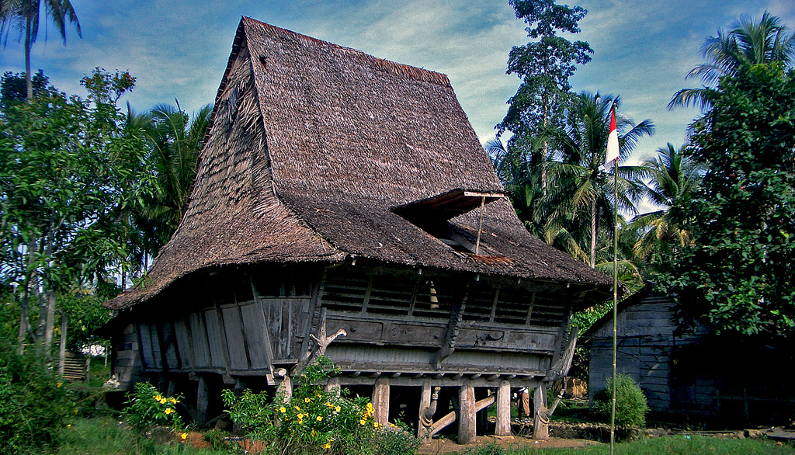
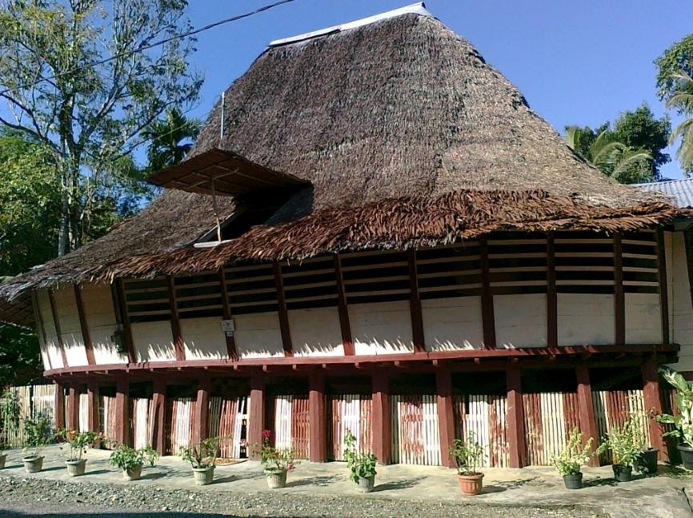

Omo Hada Laraga adalah salah satu jenis rumah adat Nias. Rumah ini berasal dari daerah Nias Utara dan memiliki ciri berbentuk oval. Rumah ini didirikan dari kayu dengan atap daun rumbia. Suasana rumah sejuk dengan ventilasi yang memadai. Pembedanya dari jenis rumah adat Nias lainnya yaitu bentuknya yang oval dengan atap rumbia yang curam dan tinggi. Bagian dinding terbuka di bagian atas, namun diapit horizontal dengan kutub kayu. Ini memungkinkan aliran udara yang baik serta perlindungan bagi penghuninya. Di dalam rumah juga terdapat berbagai ukiran. Sudut yang ereng memberikan posisi yang menguntungkan bagi penghuni rumah saat terjadi serangan dari luar. Sebuah tangga kayu mengarah ke serambi kecil yang tertutup yang berfungsi sebagai pintu masuk rumah.
|  |  |
Rumah adat ini memiliki desain unik yang mencerminkan kekayaan budaya dan keahlian arsitektur masyarakat Nias. Bentuk Omo Hada Laraga menyerupai rumah panggung dengan struktur yang kokoh dan atap tinggi yang melengkung, mirip dengan perahu terbalik. Atapnya yang terbuat dari ijuk atau daun rumbia berfungsi sebagai perlindungan dari hujan dan panas. Rumah ini ditopang oleh tiang-tiang besar yang terbuat dari kayu berkualitas tinggi, biasanya kayu besi atau kayu nangka, yang tahan terhadap cuaca dan serangan hama.
Omo Hada Laraga berasal dari tradisi arsitektur masyarakat Nias yang telah ada sejak ratusan tahun yang lalu. Rumah ini tidak hanya berfungsi sebagai tempat tinggal, tetapi juga sebagai pusat kehidupan sosial dan budaya masyarakat Nias. Di masa lalu, Omo Hada Laraga sering digunakan sebagai tempat berkumpulnya para tetua adat untuk membahas masalah-masalah penting, serta sebagai lokasi upacara adat. Desain rumah ini juga mencerminkan kemampuan masyarakat Nias dalam mengantisipasi gempa bumi, karena Pulau Nias terletak di wilayah yang rawan gempa. Struktur Omo Hada Laraga yang fleksibel memungkinkan rumah ini untuk bertahan dalam kondisi gempa dengan mengurangi dampak kerusakan.
Omo Hada Laraga memiliki beberapa ciri khas yang membedakannya dari rumah adat lainnya. Salah satu ciri utamanya adalah ukiran-ukiran yang menghiasi dinding dan tiang rumah. Ukiran ini biasanya berbentuk geometris atau menggambarkan makhluk mitologi yang diyakini sebagai pelindung rumah dan penghuninya. Selain itu, pintu masuk Omo Hada Laraga sering kali rendah, yang memaksa tamu untuk membungkuk saat masuk sebagai tanda penghormatan. Di dalam rumah, terdapat ruang luas yang berfungsi sebagai ruang keluarga dan tempat pertemuan, mencerminkan nilai kebersamaan yang dijunjung tinggi oleh masyarakat Nias. Secara keseluruhan, Omo Hada Laraga bukan hanya sebuah bangunan, tetapi juga simbol identitas budaya dan spiritual masyarakat Nias yang kaya akan nilai-nilai tradisional.